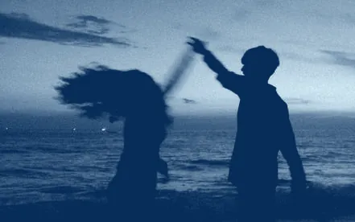

Home · A · Solo nome
teloscrivo
la luna porta consiglio
Home · B · Finestra

teloscrivo
la luna porta consiglio
Home · C · Mosaico



teloscrivo
la luna porta consiglio
Scritto · Che se sparisci
Poesia · daCanzone
Che se sparisci
teloscrivo
5 novembre
Scritto · Nella nostra testa (titolo lungo, foto chiara)
Pensiero e Poesia
Nella nostra testa
teloscrivo
4 novembre